전자계산기기능사 (2007-01-28 기출문제)
1과목: 전기전자공학
1. 정현파의 파고율은 얼마인가?
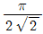
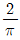
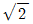
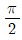
(정답률: 58%)

2. 푸시풀(push-pull) 전력 증폭기에서 출력 파형의 찌그러짐이 작아지는 주요원인은?
- 기본파가 상쇄되기 때문에
- 기수고조파가 상쇄되기 때문에
- 우수고조파가 상쇄되기 때문에
- 우수 및 기수고조파가 모두 상쇄되기 때문에.
(정답률: 53%)
3. 그림과 같이 이상적인 OP Amp에서 출력전압 V0는 몇 V인가?
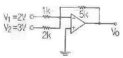
- -17.5
- 18.5
- 19.5
- -20.5
(정답률: 48%)
4. 발진기는 부하의 변동으로 인하여 주파수가 변화하는데 이를 방지하기 위하여 발진기와 부하 사이에 넣는 회로를 무엇이라 하는가?
- 동조 증폭기
- 직류 증폭기
- 결합 증폭기
- 완충 증폭기
(정답률: 65%)
5. 다음중 수정 발진기는 어떤것을 이용하는가?
- 압전 효과
- 홀 효과
- 인입 현상
- 자왜 현상
(정답률: 67%)
6. 그림과 같은 회로는?
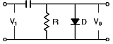
- 클램프 회로
- 클리핑 회로
- 피킹 회로
- 트랩 회로
(정답률: 57%)
7. 콘덴서 입력형 전파 정류회로의 입력 전압이 실효값으로 12V 일 경우 정류 다이오드의 최대 역전압은 약 몇 V 인가?
- 12
- 17
- 24
- 34
(정답률: 34%)
8. 어떤 전지에서 5 A의 전류가 5분간 흘렀다면 이 전지에서 나온 전기량은 몇 C 인가?
- 250
- 750
- 1500
- 3000
(정답률: 62%)
9. 일정 전압의 직류전원에 저항을 접속하고 전류를 흘릴때 이 전류값을 20% 증가시키기 위한 저항값은 약 몇 배로 해야 하는가?
- 0.80
- 0.83
- 1.20
- 1.25
(정답률: 48%)
10. 트랜지스터에서 α의 값이 0.93일때 β값은 얼마인가?
- 0.5
- 5.5
- 13.3
- 23.2
(정답률: 54%)
2과목: 전자계산기구조
11. 자료를 일정시간동안 모아 두었다가 한번에 처리하는 시스템은?
- 일괄 처리 시스템
- 지연 처리 시스템
- 실시간 처리 시스템
- 시분할 처리 시스템
(정답률: 85%)
12. 짧은 길이의 명령으로 큰 기억 장소의 번지를 지정할때 적합하며 메모리 참조 회수가 2회 이상인 주소 지정 방식은?
- Direct Addressing Mode
- Indirect Addressing Mode
- Register Addressing Mode
- Relative Addressing Mode
(정답률: 54%)
13. 컴퓨터 내부에서 수치 자료를 표현하는 방식이 아닌것은?
- 부동 소수점 방식
- 고정 소수점 방식
- 팩 형식
- ASCII
(정답률: 55%)
14. 다음 중 정수 표현에서 음수를 나타내는 방식이 아닌 것은?
- 부호와 절대치
- 부호와 0의 보수
- 부호와 1의 보수
- 부호와 2의 보수
(정답률: 72%)
15. 컴퓨터에서 사용하는 LOAD와 STORE 명령은 어느기능에 속하는가?
- 매크로 기능
- 제어 기능
- 연산 기능
- 전송 기능
(정답률: 49%)
16. 각 각의 자리마다 별도의 크기값을 갖는 가중 코드가 아닌것은?
- 8421 코드
- Biquinary 코드
- Excess-3 코드
- 2421 코드
(정답률: 51%)
17. 정보의 송.수신이 동시에 가능한 통신 방식은?
- Simplex 방식
- complex 방식
- Half Duplex 방식
- Full Duplex 방식
(정답률: 70%)
18. 다음 중 입.출력 겸용 장치는?
- 터치 스크린
- 트랙볼
- 라이트 펜
- 디지타이저
(정답률: 75%)
19. 중앙처리장치 내의 하드웨어 요소와 그 기능을 짝지은 것 중에서 서로 옳지 않은 것은?
- 레지스터 - 기억기능
- ALU - 연산기능
- 어큐뮬레이터-제어기능
- 내부버스 - 전달기능
(정답률: 66%)
20. 부동 소수점 수가 기억장치 내에 있을때 기억 되지 않는 것은?
- 부호
- 소수점
- 지수부
- 소수(기수)부
(정답률: 70%)
21. 다음 연산자중 필요없는 부분을 지워버리고 나머지 비트만을 가지고 처리하기 위하여 사용되는 것은?
- MOVE
- SHIFT
- AND
- OR
(정답률: 61%)
22. 주소지정방식 중에서 명령어 내의 주소부에 실제 데이터값을 저장하는 것은?
- 즉시주소 지정방식
- 직접주소 지정방식
- 간접주소 지정방식
- 계산에 의한 주소지정 방식
(정답률: 35%)
23. 레지스터에 저장된 데이터를 가지고 하나의 클럭 펄스동안에 실행되는 기본적인 동작을 마이크로 동작이라고 한다. 다음중 마이크로 동작이 아닌것은?
- 시프트(SHIFT)
- 카운트(COUNT)
- 클리어(CLEAR)
- 인터럽트(INTERRUPT)
(정답률: 55%)
24. 다음 명령 실행주기는 무엇을 나타내는 것인가?
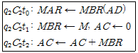
- 덧셈(ADD)
- 로드(LOAD)
- 스토어(STORE)
- 분기(JUMP)
(정답률: 46%)
25. 컴퓨터에서 사칙연산을 수행하는 장치는?
- 연산 장치
- 제어 장치
- 주기억 장치
- 보조 기억 장치
(정답률: 77%)
26. 다음의 논리도와 진리표는 어떤 회로인가?
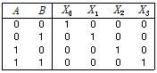
- 가산기
- 해독기
- 부호기
- 비교기
(정답률: 57%)
27. 중앙처리장치로 부터 입.출력 지시를 받으면 직접 주기억 장치에 접근 하여 데이터를 꺼내어 출력하거나 입력한 데이터를 기억할 수 있고 입.출력에 관한 모든 동작을 자율적으로 수행하는 입.출력제어 방식은?
- 프로그램 제어 방식
- 인터럽트 방식
- DMA 방식
- 채널 방식
(정답률: 66%)
28. 다음 그림에서 1의 보수 연산을 수행 하였을때 결과 값은?
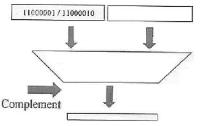
- 11000001 11000010
- 11000001 00111101
- 00111110 11000010
- 00111110 00111101
(정답률: 70%)
29. 10진수 18을 BCD 코드로 표현하면?
- 0001 0010
- 0001 0011
- 0001 1000
- 0001 0100
(정답률: 72%)
30. 번지 필드가 없는 명령어로서 스택 운영에 의해 이루어 지는 명령어 형식은?
- 0 주소 형식
- 1 주소 형식
- 2 주소 형식
- 3 주소 형식
(정답률: 75%)
3과목: 프로그래밍일반
31. 구조적 프로그램의 기본 구조가 아닌것은?
- 순차 구조
- 그물 구조
- 선택 구조
- 반복 구조
(정답률: 68%)
32. 운영체제의 기능이 아닌것은?
- 프로세서,기억장치,입.출력장치,파일 및 정보등의 자원관리
- 시스템의 각종 하드웨어와 네트워크에 대한 관리.제어
- 원시 프로그램에 대한 목적 프로그램 실행
- 자원의 스케줄링 제공
(정답률: 67%)
33. 프로그램 개발 과정에서 프로그램 안에 내재하여 있는 논리적 오류를 발견 하고 수정 하는 작업을 무엇이라고 하는가?
- mapping
- thrashing
- debugging
- paging
(정답률: 80%)
34. 인터프리터와 가장 관계 깊은것은?
- BASIC
- COBOL
- C
- FORTRAN
(정답률: 52%)
35. 컴퓨터 시스템을 구성하고 있는 하드웨어 장치와 일반 컴퓨터 사용자 또는 컴퓨터에서 실행되는 응용 프로그램의 중간에 위치하여 사용자들이 보다 쉽고 간편하게 컴퓨터 시스템을 이용할 수 있도록 컴퓨터 시스템을 제어하고 관리하는 것은?
- 컴파일러
- 로더
- DBMS
- 운영체제
(정답률: 70%)
36. 로더의 기능으로서 거리가 먼 것은?
- allocation(할당)
- linking(연결)
- loading(적재)
- translation(번역)
(정답률: 76%)
37. 기계어에 대한 설명으로 거리가 먼것은?
- 프로그램 작성이 쉽다.
- 처리속도가 빠르다
- 0 또는 1로 구성된다.
- 컴퓨터가 직접 처리하는 언어이다.
(정답률: 70%)
38. 운영체제를 수행하는 기능에 따라 제어 프로그램과 처리 프로그램으로 분류할 경우 제어 프로그램에 해당하지 않는 것은?
- 서비스 프로그램
- 감시 프로그램
- 데이터 관리 프로그램
- 작업 제어 프로그램
(정답률: 55%)
39. 프로그램에서 어떤 값을 저장할 수 있는 기억 장소의 이름으로 프로그램을 실행할 때 마다 또는 프로그램 내의 단계에 따라 그 값이 언제라도 변할 수 있는 것은 무엇인가?
- 번역기
- 상수
- 모듈
- 변수
(정답률: 75%)
40. 컴파일러에 대한 설명으로 적당한 것은?
- 기계어로 작성된 루틴들을 모아 실행 가능한 하나의 단위로 만들어진 프로그램으로 연결
- 고급언어로 작성된 프로그램을 기계어로 번역
- 목적 프로그램을 생성하지 않고 필요할때 마다 한 줄씩 기계어로 번역
- 기계어로 작성된 프로그램을 어셈블리어로 번역
(정답률: 46%)
4과목: 디지털공학
41. 가장 간단한 레지스터 회로는 외부 게이트가 전혀 없이 어떤 회로로 구성되는가?
- 플립플롭
- AND 게이트
- X-OR 게이트
- 자기코어
(정답률: 68%)
42. 논리식
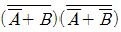
의 값은?- 0
- 1
- A
- B
(정답률: 41%)
43. 다음과 같은 플립플롭의 명칭은?
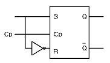
- T형 플리플롭
- D형 플립플롭
- RS형 플립플롭
- RST형 플립플롭
(정답률: 49%)
44. 다음 그림의 게이트 명칭은?
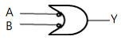
- OR
- AND
- NAND
- NOR
(정답률: 44%)
45. 다음 그림과 같이 A와 B에서 값이 입력될 때 출력값은?
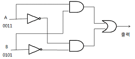
- 1001
- 0101
- 0100
- 0011
(정답률: 54%)
46. JK 플립플롭에서 J와 K의 값이 모두 1 일때 출력은 clock에 의해 어떻게 되는가?
- 출력은 0
- 출력은 1
- 반전한다
- 기억유지
(정답률: 79%)
47. 디코더 회로가 4개의 입력단자를 갖는다면 출력단자는 최소한 몇개를 갖는가?
- 2개
- 4개
- 8개
- 16개
(정답률: 57%)
48. 다음중 조합 논리 회로는?
- 계수기
- 레지스터
- 해독기
- 플립플롭
(정답률: 34%)
49. BCD 란 무엇을 의미하는가?
- 2진화 10진수
- 2진화 5진수
- 비트
- 바이트
(정답률: 71%)
50. 다음 논리 게이트의 회로 방식중에서 동작속도가 빠른 순으로 나열된 것은?(단, 왼쪽이 가장 빠름)
- ECL-DTL-TTL-MOS
- TTL-ECL-MOS-DTL
- ECL-TTL-DTL-MOS
- TTL-MOS-ECL-DTL
(정답률: 64%)
51. 2진수 1110 을 그레이 코드로 나타낸것은?
- 1001
- 1010
- 1011
- 1100
(정답률: 69%)
52. 2진수 1011 의 수를 2의 보수로 표현하면?
- 1100
- 0101
- 0100
- 0111
(정답률: 72%)
53. 카운터와 같이 플립플롭을 사용하는 디지털 회로를 무엇이라고 하는가?
- 조합 논리 회로
- 순서 논리 회로
- 아날로그 논리회로
- 멀티플렉서 논리회로
(정답률: 56%)
54. 다음 논리식 중 성립되지 않는 것은?
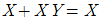
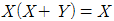
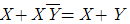
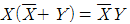
(정답률: 39%)
55. 다음은 전감산기 회로도이다. 네모칸에 들어갈 게이트로 옳은 것은?
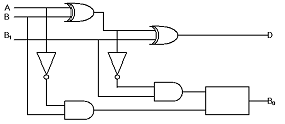
- AND
- OR
- X-OR
- NAND
(정답률: 41%)
56. 어떤 연산의 수행후 연산 결과를 일시적으로 보관하는 레지스터는?
- Accumulator
- Data register
- Buffer register
- Address register
(정답률: 73%)
57. 다음의 진리표에서 출력값이 옳지 않은것은?
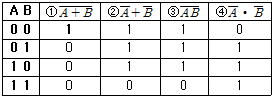
- ①
- ②
- ③
- ④
(정답률: 48%)
58. 불 대수에 관한 정리중 옳지 않은 것은?
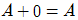
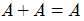
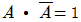
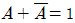
(정답률: 69%)
59. 다음 회로도에서 입력이 A 와 B 일때 계산결과의 차 D(difference) 및 빌림수 b(borrow)의 논리식은?
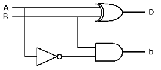
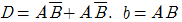
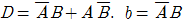
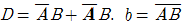
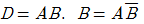
(정답률: 60%)
60. 플립플롭은 몇 비트 소자인가?
- 1
- 2
- 4
- 8
(정답률: 56%)